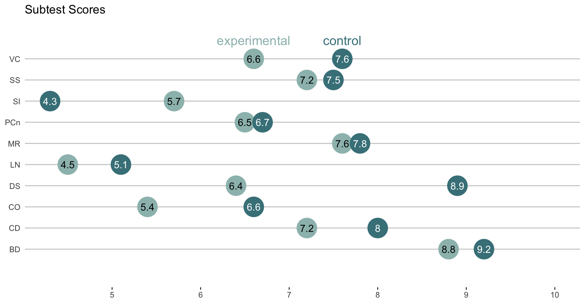
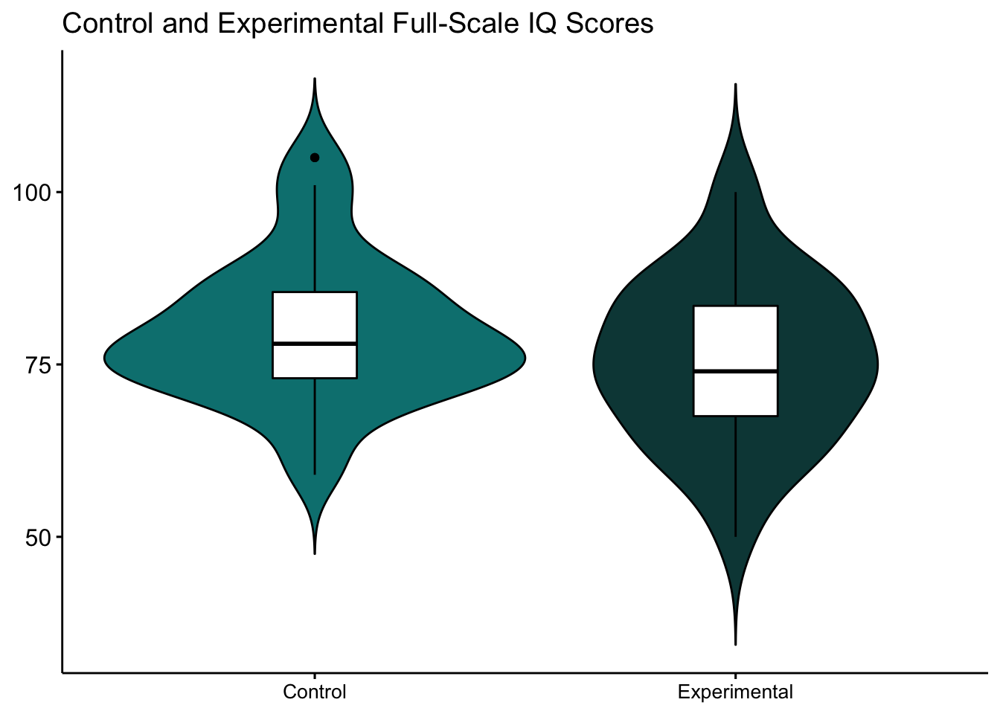

Our results demonstrate no significant difference between our control and experimental groups indicating further research is needed in understanding the validity of the WISC-IV when applied to clinical populations in Mexico.
Exploring the Criterion Validity of the WISC-IV in a Clinically Referred Sample of Children in Mexico
Averi Giudicessi 1
averigiudicessi@gmail.com
Cristian Ibarra 1
cristian.ibarra@uabc.edu.mx
Hector Pelayo 1
1 Department of Psychology, Benemérita Universidad Autónoma de Puebla
Introduction
The Weschler Scale of Intelligence (WISC-IV) is one of the most commonly used measures in the neuropsychological evaluation of children. However, to our knowledge, only one other study addresses the clinical utility of the WISC-IV in a Spanish speaking population in Puerto Rico (San Miguel Montes et al. 2010).
The Escala Weschler de Inteligencia para Niños-IV (Wechsler and Padilla Sierra 2007) is the most current version of the Weschler Scale of intelligence for use specifically with the Mexican Spanish speaking population.
The WISC-IV was piloted in Mexico in 2005 and adapted comprehensively using a process that considered the translation, adaptation, and best practice guidelines put forth by the International Guidelines for Test Adaptation (Fina, Sánchez-Escobedo, and Hollingworth 2012).
The adaptation of the WISC-IV exemplifies the necessity for appropriate testing material in a Mexican population however, to our knowledge little information is available regarding the clinical utility of this specific instrument in Mexico.
Objectives
The objective of this study was to examine the criterion validity of the WISC-IV’s subtests and index scores in a clinically referred sample in Mexico.
Our hypothesis was that participants in the clinical group would perform significantly worse than their healthy counterparts on both full scale IQ and domain scores than the participants in the control group.
Methods
The present study included 86 participants, 35 clinical patients referred for neuropsychological evaluation for persistent learning difficulties at a public clinic and 51 healthy control children enrolled in public school with a GPA of 3.0-4.0 in Puebla, Mexico.
Participants were included in the study if they were between the ages of 7-12 and had no history of a psychiatric disorder.
Due to limited access to psychological services, this was the first experience seeking neuropsychological evaluation for all participants.
The WISC-IV was administered to participants as part of a comprehensive neuropsychological evaluation process. Informed consent was obtained prior to evaluation.
| Variable | Control | Experimental |
|---|---|---|
| Age (years) | 8 | 9 |
| Parent Education (years) | 10 | 14 |
| Male | 34 | 20 |
| Female | 17 | 15 |
Results
Independent sample T-Tests show no significant differences in Full-Scale IQ average (FSIQ) between the clinical sample (M=75.40, SD=11.81) and control group (M=79.73, SD=10.36). Scores of subtests for all participants can be found in figure 1.
It is important to note we were unable to explain below average scores in the control group by any confounding demographic variable collected during our study.

Figure 1: VC - Vocabulary; SS- Symbol Search; SI - Similarities; PCn - Picture Concepts; MR - Matrix Reasoning; LN - Letter-Number Sequencing; DS - Digit Span; CO - Comprehension; CD - Coding; BD - Block Design.

| Index | Experimental | Control | t | p |
|---|---|---|---|---|
| Verbal Comprehension | 76.50 | 77.60 | -0.40 | 0.69 |
| Perceptual Reasoning | 84.90 | 88.40 | -1.15 | 0.25 |
| Working Memory | 76.90 | 88.30 | -2.23 | 0.03 |
| Processing Speed | 81.30 | 87.30 | -2.19 | 0.03 |
| Full-Scale IQ | 75.40 | 79.90 | -1.80 | 0.08 |
Conclusions
Our results demonstrate low average IQ scores for both groups, indicating further research is needed in understanding the criterion validity of the WISC-IV when applied to clinical and control populations in Mexico. Furthermore, we recommend more research comparing the Mexican standardization of the WISC-IV with other clinical patients and healthy counterparts before utilizing as clinical evaluation tool. This is due to inability to explain below average scores in the control group by any confounding demographic variable.
The WISC-IV norms were developed in Mexico on the basis of age, sex, and type of school (private/public) (Fina, Sánchez-Escobedo, and Hollingworth 2012). Future research regarding the quality of education in pediatric populations and the effects on scores of neuropsychological measurements might be conducive in understanding the below average scores in our study.
Acknowledgements
This work was supported by scholarships from CONACYT to A.Giudicessi (#890272) & C.Ibarra (#889901).
References
Fina, Anthony D., Pedro Sánchez-Escobedo, and Liz Hollingworth. 2012. “Annotations on Mexico’s WISC-IV: A validity study.” Applied Neuropsychology: Child 1 (1): 6–17. https://doi.org/10.1080/21622965.2012.665771.
San Miguel Montes, Liza E., Daniel N. Allen, Antonio E. Puente, and Cris Neblina. 2010. “Validity of the wisc-iv spanish for a clinically referred sample of hispanic children.” Psychological Assessment 22 (2): 465–69. https://doi.org/10.1037/a0018895.
Wechsler, David, and Gloria Padilla Sierra. 2007. WISC-IV: escala Wechsler de inteligencia para niños-IV. México, D.F.: EL Manual Moderno.